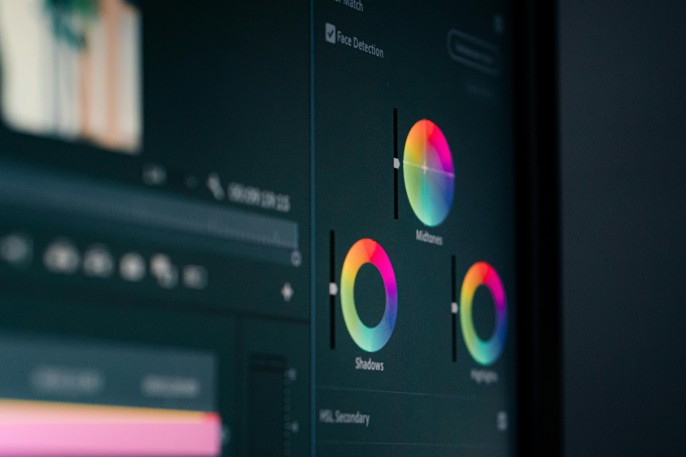

Becoming a good mobile video editor is a realistic goal for a student, provided you combine consistent practice with smart learning habits. A good mobile editor is not just someone who can open an app and cut clips; they are a storyteller who understands pacing, rhythm, emotion, and visual psychology. On mobile, limitations in interface and tools make these skills even more important: you must create clean, engaging videos within a smaller screen and fewer menus, which forces you to focus on clarity and intent.

- Deciding what to cut and what to keep so the video feels tight and purposeful.
- Matching music, sound effects, and visuals so the energy feels natural.
- Using simple color grading and typography to make the video look “intentional,” not random.
- Understanding short-form formats (Reels, Shorts, TikTok-style clips) and how to grab attention in the first 1-2 seconds.
What it means to be a good mobile editor
A good mobile editor is someone who brings structure and emotion into every project, even if the clip is only 30 seconds long. Instead of dumping effects everywhere, they use cuts, timing, and sound to guide the viewer’s eye and feelings. This means paying attention to:
- When a new scene begins or ends.
- Whether the music tempo matches the visual energy.
- If the text is easy to read and does not distract from the important action.
Becoming a good mobile editor as a student starts with clarity and discipline rather than with fancy apps or endless effects. The most important step is to pick one strong mobile editor—like CapCut, VN, InShot, or Adobe Premiere Rush—and commit to it for at least 3-6 months. During this time, you should focus on the basics: cutting, splitting, and trimming clips; using transitions, speed ramps, and zoom-ins; adding clean text and overlays; and managing audio levels so music, voice-over, and sound effects sit together properly.

Another key habit is to build your “editing eye” by watching short-form videos critically every day. Instead of just scrolling for entertainment, pause and ask yourself how the editor cuts on action or speech beats, what kind of transitions are used, how loud the music is compared to the dialogue, and how quickly the first hook appears. This kind of intentional watching slowly trains your brain to copy good pacing and structure and avoid the messy, over-decorated edits that beginners often make. As a student, you should also treat editing as a small weekly project instead of a random hobby. You can turn class notes into 60-second revision reels, edit short travel or daily-life vlogs from your phone footage, or post 3-5 Reels or Shorts on subjects you enjoy, such as cricket, tech, fitness, or study-motivation. This keeps your practice realistic, structured, and connected to real-world content.
Good editing is more about structure than filters. Instead of stuffing your videos with flashy transitions and effects, focus on cutting on movement or speech, keeping shots short in fast-paced parts and longer in emotional or explanatory moments, and using simple text overlays that do not distract from the main action. If a video feels confusing or “too much,” strip it back, remove one or two effects, shorten some clips, and rebuild with fewer layers so the story feels clearer. Equally important is audio: adjust background music so it supports rather than drowns your voice-over, use subtle sound effects only where they add emphasis, and avoid abrupt cuts by fading in/out or aligning cuts to the beat of the music. For YouTube Shorts or Reels, pay close attention to how sound cues match on-screen actions, since the first sound and image together decide whether viewers keep watching. As a student, it also helps to build a small portfolio of your best work. Even if you only have 5–10 strong edits—Reels, Shorts, or slightly longer clips—you can already start organizing them as a collection. Add short notes for each video explaining what you focused on, such as tighter pacing, cleaner text, or better audio mixing. This portfolio helps you track your progress over time and later becomes proof of your skill when you want to pitch yourself for freelance editing, campus projects, or content‑creation collaborations. In terms of time, a realistic weekly plan is about 4–6 hours of total practice divided into 50–70‑minute sessions over 4–6 days. Use roughly 20–30 minutes to watch and analyze videos from good editors and 30–40 minutes to edit hands‑on, either by finishing one short project or re‑editing an old clip to improve its pacing and overall feel. When exams are close, you can reduce this to 2–3 hours per week but should still keep the habit alive so your muscle memory and motivation do not fade.

There is no fixed timeline, but most practitioners agree that with consistent practice, you can become comfortable and consistent in about 3–6 months, and truly proficient and “stand‑out” in roughly 1–2 years. In the first 3 months, you will still make mistakes, but you should start understanding basic cutting, transitions, and audio handling. By 3–6 months, you may develop a recognizable style—fast‑paced, educational, cinematic, or meme‑style—and edit 30–60 second clips confidently. Between 6–12 months, with 4–6 hours per week, your speed, creativity, and storytelling will noticeably improve, and people may start asking you to edit for their projects or clubs. After 12–24 months of steady work, you can stand out in your local circle or even on social media, especially if you keep experimenting with different formats and niches. Standing out globally depends not only on your editing skill but also on your content, niche, and posting strategy, so think of editing as a powerful tool that makes your ideas look sharper and more professional. Finally, your mindset will shape how quickly you grow. Treat every small edit as a learning experiment instead of a masterpiece, and regularly compare your early work with your newer edits to see how far you have come. Avoid comparing your first‑month videos to polished professionals’ content; instead, measure your progress against your own past work. Join a small creator or editing community—online or in college—where you can share your edits and get feedback, because constructive criticism speeds up growth more than just liking others’ videos. By combining focused practice, smart weekly time management, and a patient, long‑term mindset, you can absolutely become a good—and even standout—mobile editor while still being a full‑time student.